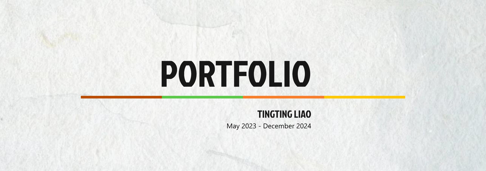
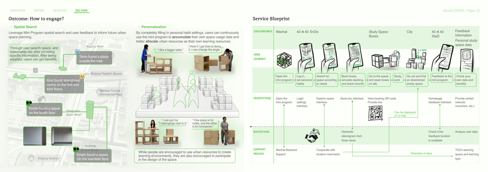
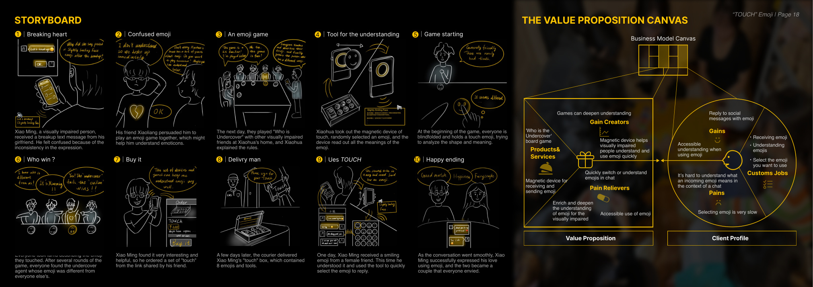

Background
I have a cross-disciplinary background spanning Industrial Design and Creative Robotics. My work connects design research, prototyping, visual communication, and technical experimentation.
Product-minded designer exploring interaction design, service systems, AI, HRI, and human-centred technology.
I am currently studying Creative Robotics at University of the Arts London and building a portfolio across interaction design, service systems, accessibility, creative technology, soft robotics, and AI-assisted experiences.

Quick overview
A concise introduction for recruiters: background, focus areas, selected work, research-led projects, and contact information.
I have a cross-disciplinary background spanning Industrial Design and Creative Robotics. My work connects design research, prototyping, visual communication, and technical experimentation.
I am especially interested in roles where product thinking meets interaction, service systems, AI, HRI, and human-centred technology.
Selected work
A shortlist of projects that best represent my current direction for job applications.

Featured Project 01
A participatory design project rethinking urban study space through modular boxes, a mini-program, and a service blueprint.

Featured Project 02
A soft-robotic music interaction system translating knee movement into pneumatic actuation and sound for users with upper-limb disabilities.

Featured Project 03
An interaction and accessibility project exploring tactile emoji communication for visually impaired users.
Research / Experiments
Projects that are better framed as technical research, critical design, or experimental practice rather than standard design case studies.
A communication-support prototype combining CNN + LSTM, OpenCV, and real-time camera interaction to explore how recognition performance translates into usable interaction.
A proof-of-concept prototype using Python, OpenCV, and MediaPipe to surface, record, and revisit subtle interaction cues in human communication.
Contact
Currently interested in AI product, interaction design, service design, UX, HRI, and human-centred technology roles.
Email: kristintt0317@gmail.com
Phone: +86 18862377199
Location: Suzhou / London
MA Creative Robotics, University of the Arts London
BA Industrial Design, 2+2 joint program across Saint Petersburg Polytechnic University and Jiangsu Normal University